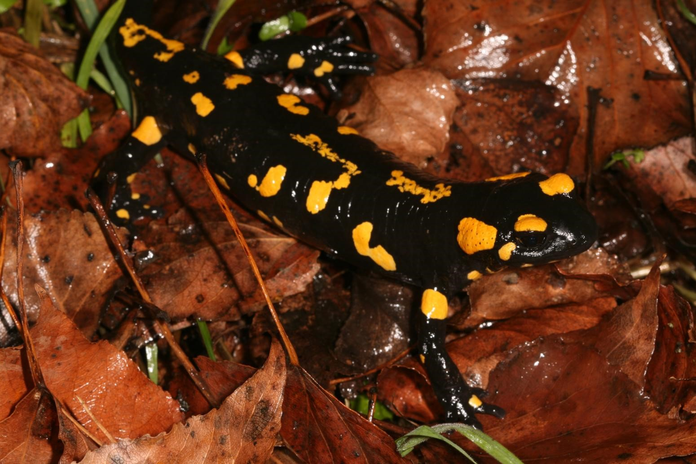

SALAMANDRA COMÚN

Salamandra común, es una especie de anfibio alargado y provisto de patas y cola perteneciente a la familia Salamandridae. Su piel es lisa y brillante de color negro con manchas irregulares amarillas, aunque estos colores pueden cambiar según sus hábitats.
Esta combinación significa peligro, ya que, las glándulas que poseen en el cuello están impregnadas de neurotixina (veneno). Es el más común de los urodelos en Europa, viven en zonas húmedas y con vegetación mojada siempre cerca de un punto con agua.
En el caso de estos anfibios, adultos y larvas se alimentan de invertebrados. Mientras que los primeros lo hacen de invertebrados terrestres, los segundos se alimentan de invertebrados acuáticos.
- Es venenosa
- Categorizado como anfibio urodelo queriendo decir que es de los pocos que existen que tienen cola.
- Su piel está cubierta por una capa de baba, por lo qué son muy escurridizas.
- Viven hasta 20 años
- Son ovovivìparas
REGRESAR AL MENU